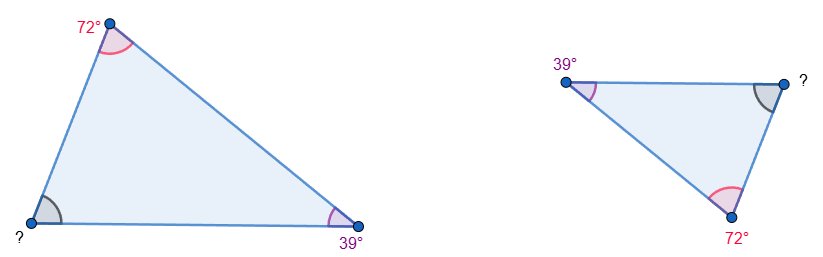

Amb els triangles, és tres vegades millor
Si ho recordeu, tots hauríem d'haver copiat aquest requadre, cert?
| Dos polígons són semblants si tenen tots els angles iguals I els costats proporcionals. (s'han de complir les dues condicions al mateix temps) |
Molt bé, ara ho adaptarem als triangles! Hem insistit que amb ells és més fàcil, per què? Perquè no fan falta les dues condicions!
| Dos triangles són semblants si tenen tots els angles iguals O els costats proporcionals. (basta mirar un dels dos, si passa una, passa l'altra!) |
Però això encara no és prou bó! De vegades no sabem els 3 costats, i si coneixem dos angles, hem dit que també sabem el tercer... Per tant, hem d'aprendre tres criteris de semblança. Això és, tres maneres diferents de decidir si dos triangles són o no semblants entre ells. Anem a veure'ls!
| C1: Dos triangles són semblants si tenen 2 angles iguals |
Només 2? Clar! Si tenen 2 angles iguals, el tercer també ha de ser igual, perquè entre tots han de sumar 180º! (A això li direm que els dos primers angles determinen el tercer).
| . |
En aquest cas, és cert que només coneixem dos angles, però com que són iguals, podem dir: Pel C1 (Criteri 1), com que tenen 2 angles iguals, són triangles semblants Si voleu saber perquè, és molt fàcil veure que ara l'angle desconegut es podria fer així: \( ? = 180-72-39 = 69º \) |
| C2: Dos triangles són semblants si tenen els 3 costats proporcionals |
Aquest no té massa secret. Si tenen 3 costats proporcionals, també han de tenir angles iguals. I el darrer?
| C3: Dos triangles són semblants si tenen 2 costats proporcionals i l'angle que formen igual |
Això és nou, què vol dir? Vol dir que si podeu veure que hi ha un angle igual, ens hem de fixar entre quins costats es troba, i comprovar si aquells són o no proporcionals!